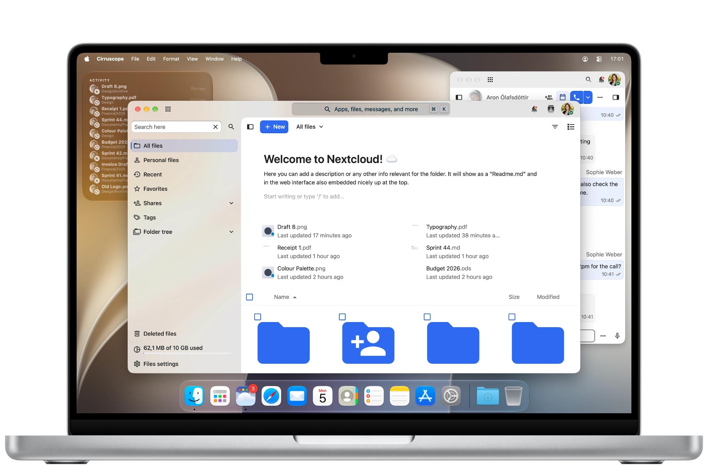

Hecho para macOS
Creado en Swift y AppKit: Cirruscope tiene el aspecto y el comportamiento de una app que pertenece a tu Mac.
Cirruscope convierte tu Nextcloud en una app de macOS rápida y nativa, con ventanas reales, notificaciones nativas y sin el desorden de las pestañas del navegador.

Creado en Swift y AppKit: Cirruscope tiene el aspecto y el comportamiento de una app que pertenece a tu Mac.
Vive en tu Dock con sus propios menús en la barra de menús, aparece al pulsar Comando-Tabulador y abre tantas ventanas como quieras: en distintos espacios, en Mission Control y en el organizador visual.
Una capa nativa fina alrededor de WebKit permite un arranque rápido y un consumo reducido, sin cargar con un motor de navegador propio.
Nextcloud ocupa la ventana de borde a borde, incluida la barra de título, y puedes ocultar la barra lateral de Nextcloud desde el menú Vista o con Control-Comando-S cuando quieras aún más espacio.
Activa la apariencia Liquid Glass opcional y los materiales de las ventanas dejan ver el escritorio que hay detrás, así que Nextcloud se integra en tu espacio de trabajo en vez de taparlo.
Abre cualquiera de tus apps de Nextcloud desde el menú Vista o el Dock, y asigna a las que más usas un atajo de teclado propio.
Las notificaciones de Nextcloud llegan al centro de notificaciones, con un contador en el icono del Dock, como en cualquier otra app de Mac.
Cirruscope se conecta con la app Atajos de macOS, así que Nextcloud puede ser un paso más en las automatizaciones que ya creas.
Busca directamente en Spotlight el contenido de Nextcloud al que ir, sin pasar antes por la app.
Ten tu Nextcloud a la vista, directamente en tu escritorio o en el centro de notificaciones.
Elige los archivos que quieras subir en el cuadro de diálogo Abrir estándar de macOS. Las descargas van directamente a tu carpeta Descargas, con una ventana de progreso y una notificación al finalizar.
Funciona con cualquier instancia de Nextcloud: tu propio servidor autoalojado o el de un proveedor de confianza.
La abrí y era una ventana de Nextcloud. En un Mac. En una app de Mac. Sentí cosas.
Cirruscope es la única app a la que le confío mis archivos. Y mi masa madre. No preguntes.
Pasó la revisión del App Store a la primera. ¿Alguien puede venir a ver si estamos bien?
No sé qué es un WebView, pero mi nieto dice que este es de los buenos.
Todas las citas son ficticias. Bueno, casi.
Descubre cómo Cirruscope se integra con la implementación masiva, los perfiles de configuración y las versiones personalizadas para empresas.
Cirruscope para empresas →